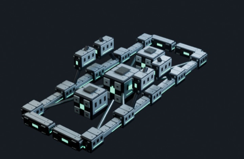
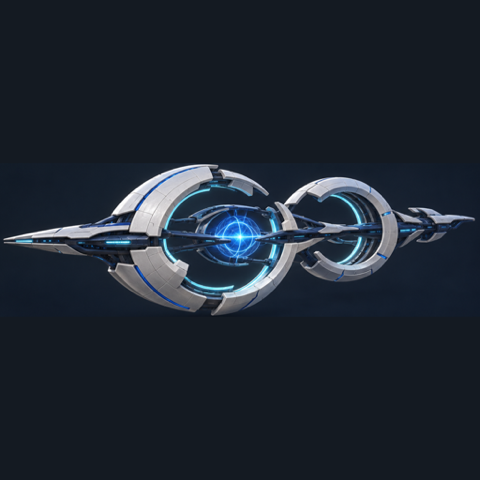
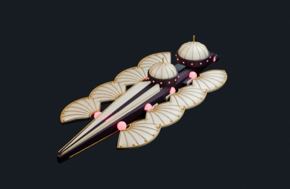
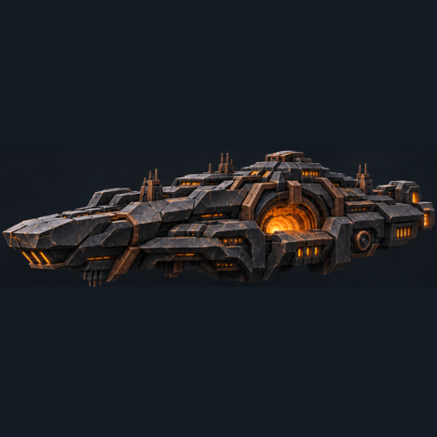

Last Orbit › Factions
The civilisations of Last Orbit
Last Orbit's enemy comes in blocks of twenty waves. Each block belongs to one civilisation with its own ships, admiral and leader, and each needs a different answer from your mines and fleet. After the seventh block the Heirs take over every fleet.

Nul · The Zero Consensus
Waves 21–40
▲ Long-range weapons (+20% range)
▼ No edge up close

Nivara · The Phase Walkers
Waves 41–60
▲ Very fast (+30%) with strong shields
▼ Thin hulls

Auralis · The Sun Dynasty
Waves 101–120
▲ The hardest-hitting beams (+20% damage)
▼ Their hulls give way quickly

Korvath · The Basalt Union
Waves 121–140
▲ Massive hulls, the toughest of all
▼ Very slow (−30%), weak shields
The Heirs · From beyond time
Wave 141 onward
▲ Every civilisation's strength at once, larger fleets, admirals
▼ No one aboard; steered thralls